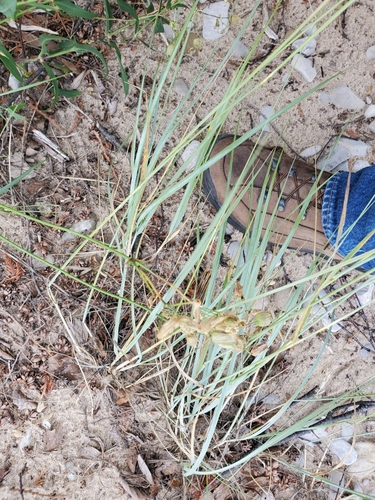
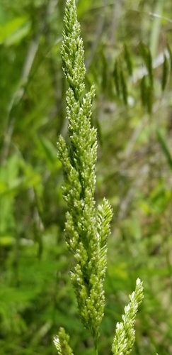

Nesting material
What the plant does, from the tags the catalogue records against it.
45 plants
Alkali Cord GrassSpartina gracilis Matt Lavin, some rights reserved (CC BY-SA)") Alpine BluegrassPoa alpinaBig BluestemAndropogon gerardi
Alpine BluegrassPoa alpinaBig BluestemAndropogon gerardi Matt Berger, some rights reserved (CC BY), uploaded by Matt Berger") Blue Grama GrassBouteloua gracilis
Blue Grama GrassBouteloua gracilis Joshua Mayer, some rights reserved (CC BY-SA)") Blue-eyed GrassSisyrinchium montanum
Blue-eyed GrassSisyrinchium montanum Matt Lavin, some rights reserved (CC BY-SA)") Bluebunch FescueFestuca idahoensis
Bluebunch FescueFestuca idahoensis Matt Lavin, some rights reserved (CC BY)") Bluejoint Reed GrassCalamagrostis canadensisCanada Rice GrassPiptatherum canadense
Bluejoint Reed GrassCalamagrostis canadensisCanada Rice GrassPiptatherum canadense aarongunnar, some rights reserved (CC BY), uploaded by aarongunnar") Common Tall Manna GrassGlyceria grandis
Common Tall Manna GrassGlyceria grandis Matt Berger, some rights reserved (CC BY), uploaded by Matt Berger") Foothills Rough FescueFestuca campestris
Foothills Rough FescueFestuca campestris Jason Hollinger, some rights reserved (CC BY)") Fowl Manna GrassGlyceria striata
Fowl Manna GrassGlyceria striata Mary Krieger, some rights reserved (CC BY), uploaded by Mary Krieger") Green MilkweedAsclepias ovalifolia
Green MilkweedAsclepias ovalifolia Matt Lavin, some rights reserved (CC BY)") Green Needle GrassNassella viridulaHooker's Oat GrassAvenula hookeri
Green Needle GrassNassella viridulaHooker's Oat GrassAvenula hookeri Indigenous RicegrassEriocoma hymenoides
Indigenous RicegrassEriocoma hymenoides Douglas Goldman, some rights reserved (CC BY-SA), uploaded by Douglas Goldman") June GrassKoeleria macrantha
June GrassKoeleria macrantha Colin Meurk, some rights reserved (CC BY-SA), uploaded by Colin Meurk") Little BluestemSchizachyrium scopariumNarrowleaf Cotton-grassEriophorum angustifolium
Little BluestemSchizachyrium scopariumNarrowleaf Cotton-grassEriophorum angustifolium Trevor Van Loon, some rights reserved (CC BY), uploaded by Trevor Van Loon") Needle and Thread GrassHesperostipa comata
Needle and Thread GrassHesperostipa comata Matt Berger, some rights reserved (CC BY), uploaded by Matt Berger") Parry's OatgrassDanthonia parryi
Parry's OatgrassDanthonia parryi USFWS Mountain-Prairie, some rights reserved (CC BY)") Porcupine GrassHesperostipa spartea
Porcupine GrassHesperostipa spartea naturalist charlie, some rights reserved (CC BY), uploaded by naturalist charlie") Poverty Oat GrassDanthonia spicataPrairie Cord GrassSpartina pectinata
Poverty Oat GrassDanthonia spicataPrairie Cord GrassSpartina pectinata Jim Morefield, some rights reserved (CC BY)") Rocky Mountain FescueFestuca saximontanaRough FescueFestuca hallii
Rocky Mountain FescueFestuca saximontanaRough FescueFestuca hallii Roberto Daniel Avila, some rights reserved (CC BY), uploaded by Roberto Daniel Avila") SaltgrassDistichlis spicataSand GrassCalamovilfa longifolia
SaltgrassDistichlis spicataSand GrassCalamovilfa longifolia Sandberg BluegrassPoa secunda
Sandberg BluegrassPoa secunda Douglas Goldman, some rights reserved (CC BY-SA), uploaded by Douglas Goldman") Showy MilkweedAsclepias speciosa
Showy MilkweedAsclepias speciosa Matt Lavin, some rights reserved (CC BY)") Slender WheatgrassElymus trachycaulus
Slender WheatgrassElymus trachycaulus Nolan Exe, some rights reserved (CC BY), uploaded by Nolan Exe") Slough GrassBeckmannia syzigachne
Slough GrassBeckmannia syzigachne aarongunnar, some rights reserved (CC BY), uploaded by aarongunnar") SweetgrassAnthoxanthum hirtum
SweetgrassAnthoxanthum hirtum aarongunnar, some rights reserved (CC BY), uploaded by aarongunnar") SwitchgrassPanicum virgatum
SwitchgrassPanicum virgatum Michael J. Papay, some rights reserved (CC BY), uploaded by Michael J. Papay") TicklegrassAgrostis scabraTufted HairgrassDeschampsia cespitosa subsp. cespitosa
TicklegrassAgrostis scabraTufted HairgrassDeschampsia cespitosa subsp. cespitosa Tufted Tall Manna GrassGlyceria elata
Tufted Tall Manna GrassGlyceria elata Dean Wm. Taylor, some rights reserved (CC BY)") Western FescueFestuca occidentalisWestern Porcupine GrassHesperostipa curtisetaWestern WheatgrassPascopyrum smithiiWhite-grained Mountain Rice GrassOryzopsis asperifolia
Western FescueFestuca occidentalisWestern Porcupine GrassHesperostipa curtisetaWestern WheatgrassPascopyrum smithiiWhite-grained Mountain Rice GrassOryzopsis asperifolia
Alpine BluegrassPoa alpinaBig BluestemAndropogon gerardiBlue Grama GrassBouteloua gracilisBlue-eyed GrassSisyrinchium montanumBluebunch FescueFestuca idahoensisBluejoint Reed GrassCalamagrostis canadensisCanada Rice GrassPiptatherum canadenseCommon Tall Manna GrassGlyceria grandisFoothills Rough FescueFestuca campestrisFowl Manna GrassGlyceria striataGreen MilkweedAsclepias ovalifoliaGreen Needle GrassNassella viridulaHooker's Oat GrassAvenula hookeriIndigenous RicegrassEriocoma hymenoidesJune GrassKoeleria macranthaLittle BluestemSchizachyrium scopariumNarrowleaf Cotton-grassEriophorum angustifoliumNeedle and Thread GrassHesperostipa comata
Northern Wheat GrassElymus lanceolatusParry's OatgrassDanthonia parryiPorcupine GrassHesperostipa sparteaPoverty Oat GrassDanthonia spicataPrairie Cord GrassSpartina pectinata
Prairie Wedge GrassSphenopholis obtusataPurple Oat GrassSchizachne purpurascensPurple Reed GrassCalamagrostis purpurascensRichardson's NeedlegrassEriocoma richardsoniiRocky Mountain FescueFestuca saximontanaRough FescueFestuca halliiSaltgrassDistichlis spicataSand GrassCalamovilfa longifoliaSandberg BluegrassPoa secundaShowy MilkweedAsclepias speciosaSlender WheatgrassElymus trachycaulusSlough GrassBeckmannia syzigachneSweetgrassAnthoxanthum hirtumSwitchgrassPanicum virgatumTicklegrassAgrostis scabraTufted HairgrassDeschampsia cespitosa subsp. cespitosaTufted Tall Manna GrassGlyceria elataWestern FescueFestuca occidentalisWestern Porcupine GrassHesperostipa curtisetaWestern WheatgrassPascopyrum smithiiWhite-grained Mountain Rice GrassOryzopsis asperifolia